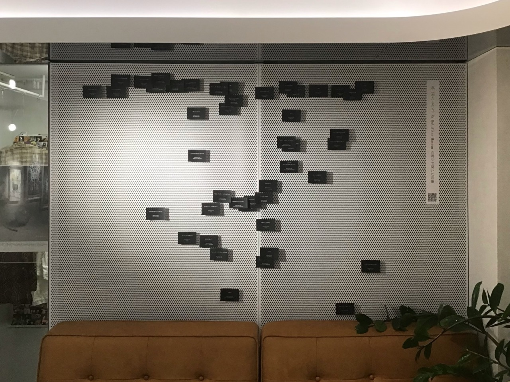
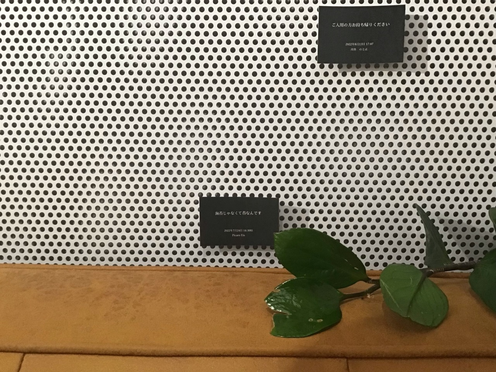
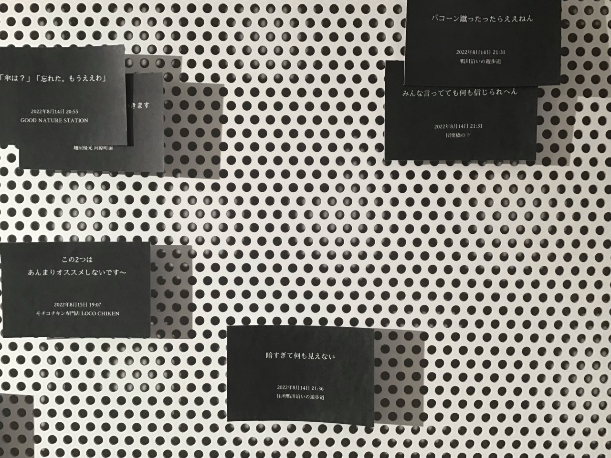
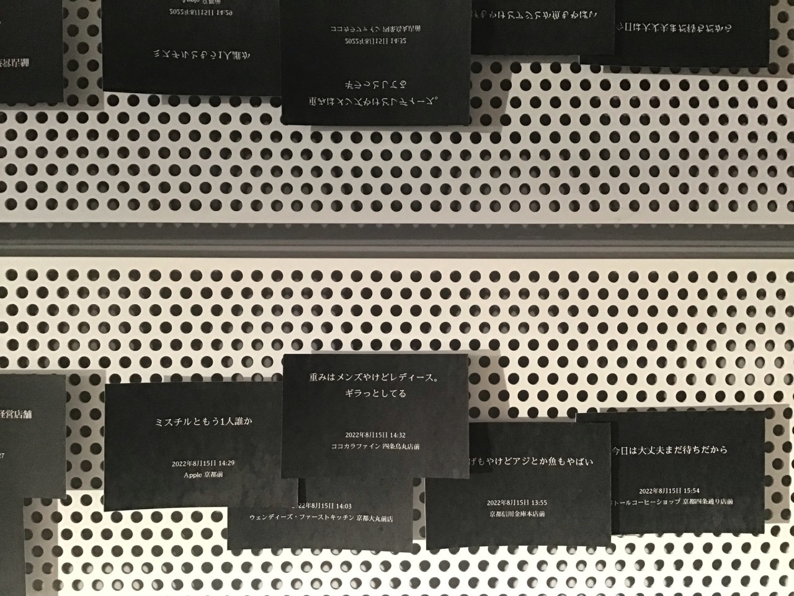
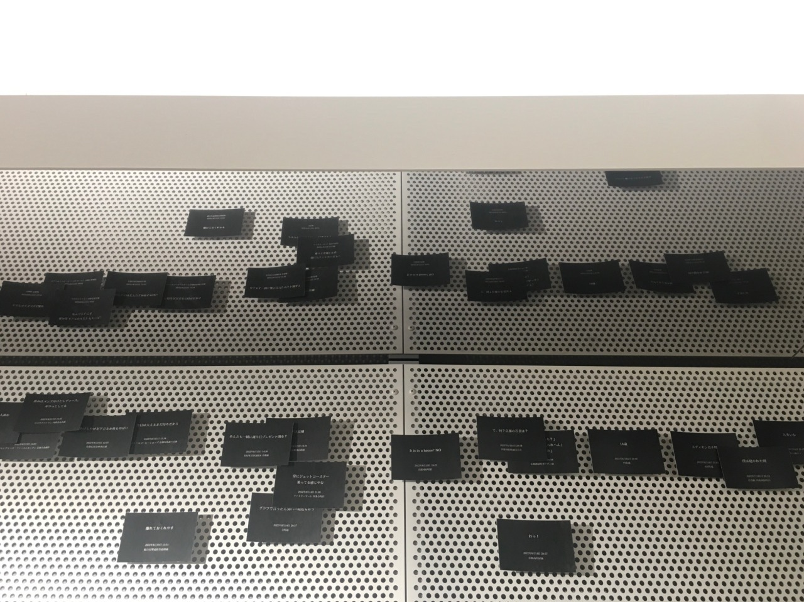
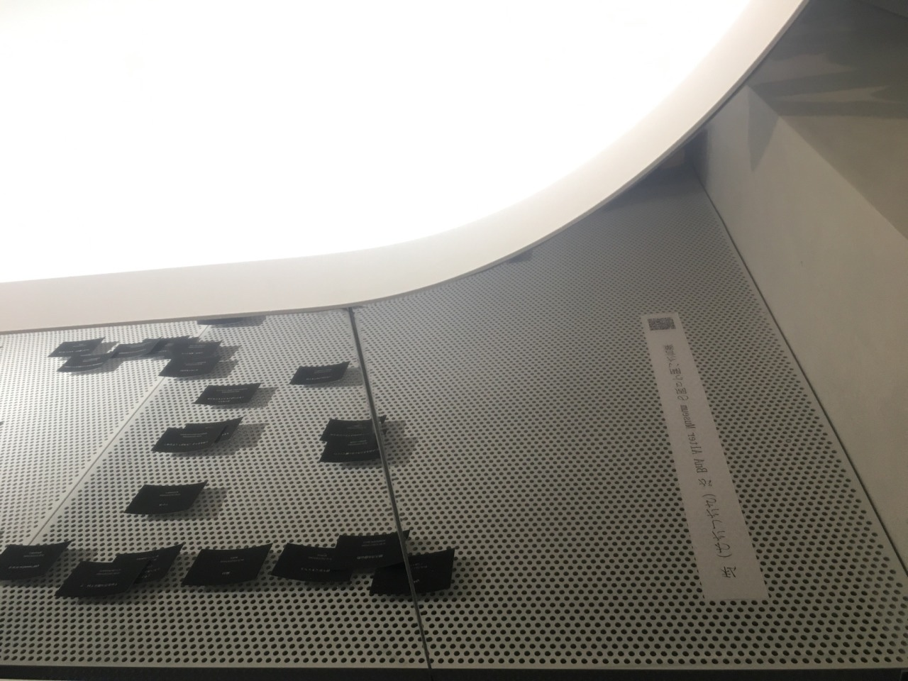
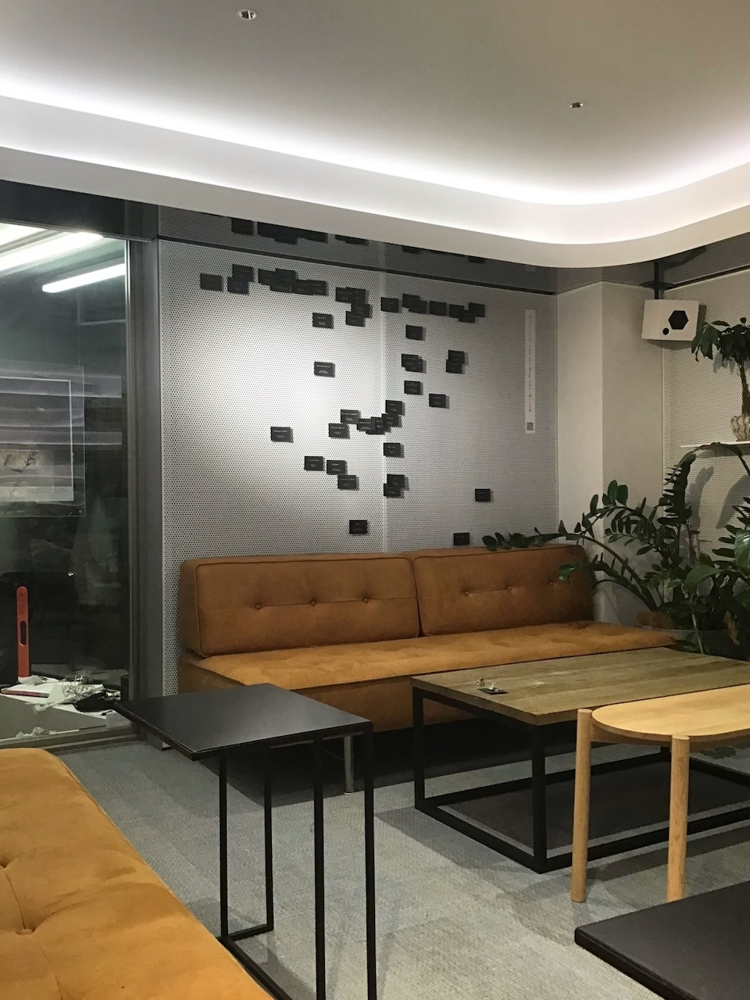

<u>2022年8月17日(水) 〜 8月22日(月)</u>
<h2>私（わたしたち）が 京都・河原町周辺で聞いた言葉</h2>
<p>
  <u>会場</u> BnA Alter Museum 2F Cafe
  <br>
  <u>住所</u>
  <a href="https://g.page/BnAAlterMuseum?share" target="_blank">京都府京都市下京区天満町２６７−１</a>
</p>
<p>
  <u>時間</u> 午前10時～午後6時
</p>
<fieldset>
  
  
  
  
  
  
  
  
</fieldset>